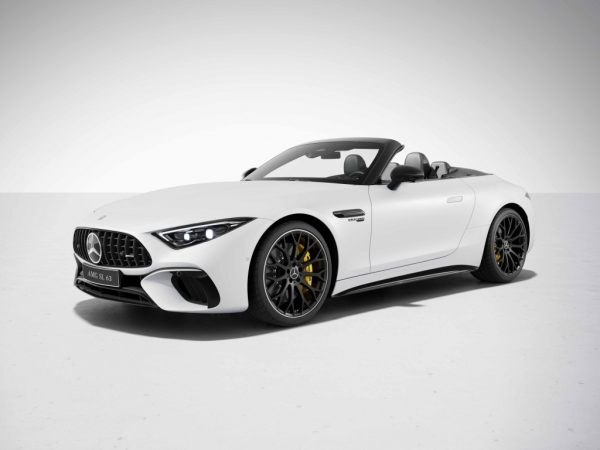
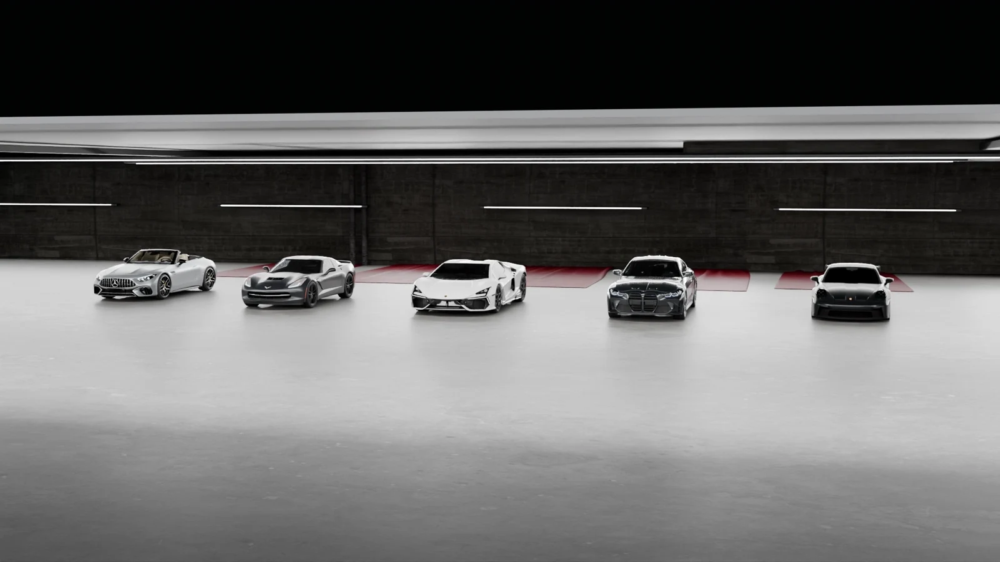
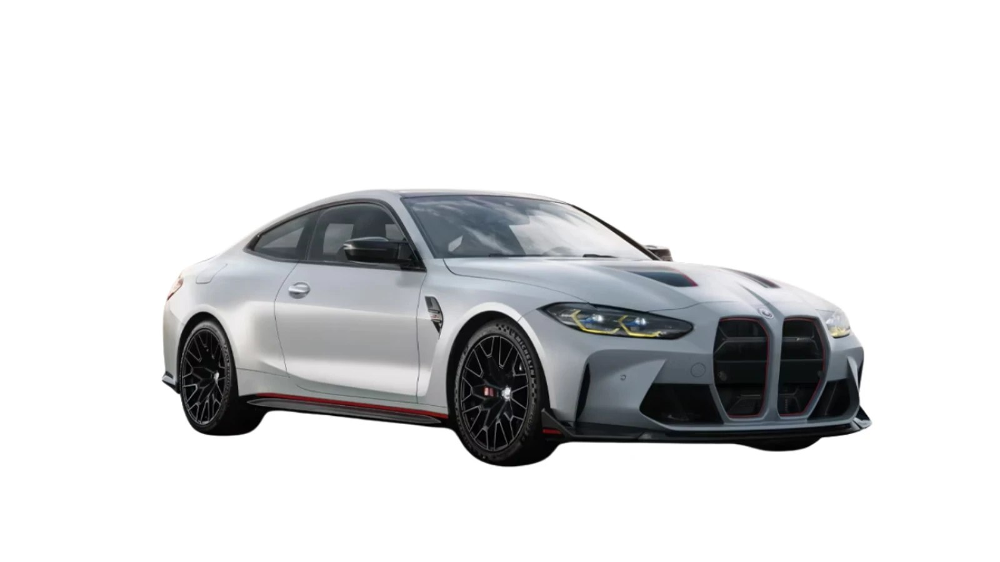
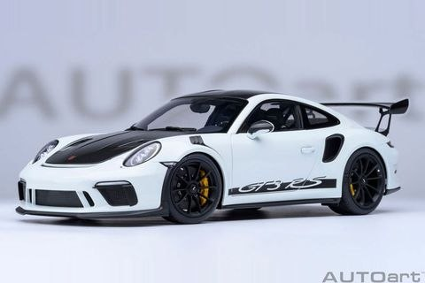
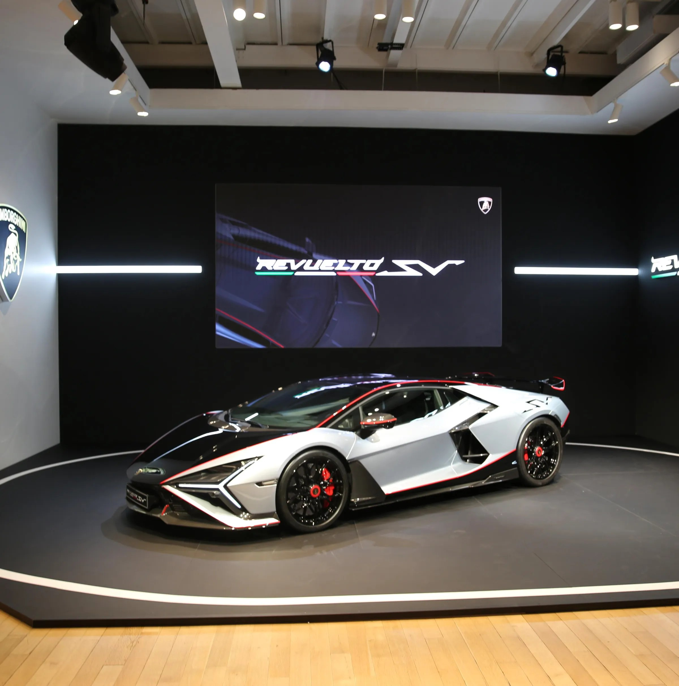
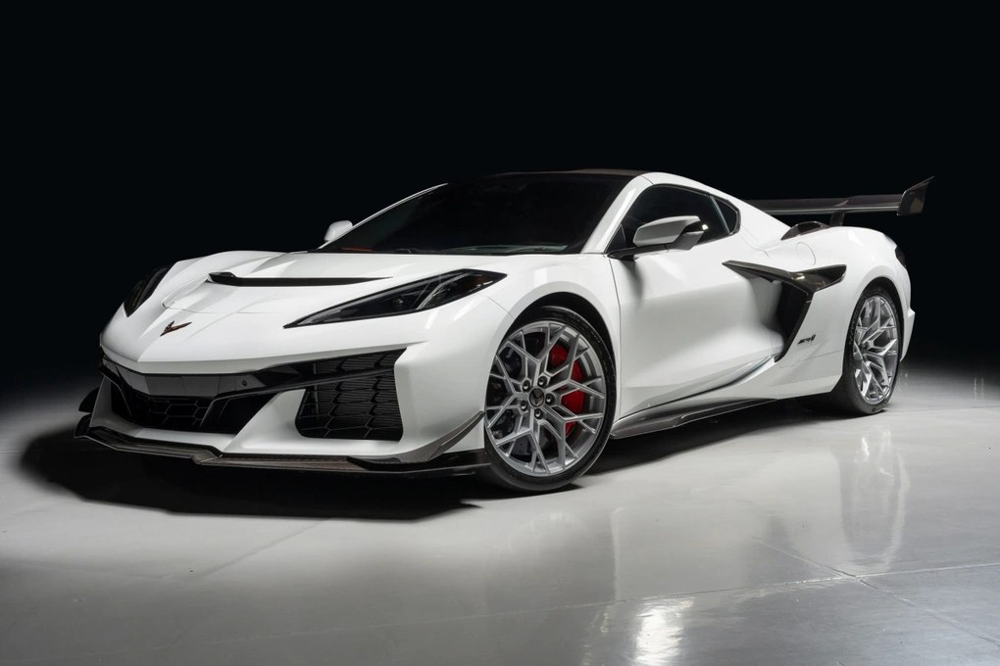

01 / SL 63 4MATIC+
Mercedes-AMG SL 63
Mui trần, chất AMG.
- Công suất
- 585 PS
- 0–100 km/h
- 3,6 giây
- Động cơ
- V8 4,0 L tăng áp kép
- Hộp số
- AMG MCT 9 cấp

ZEPHYRON / Khám Phá
Từ roadster AMG đến Corvette V8. Cuộn để khám phá cá tính của từng mẫu xe.
Khám phá 5 mẫu xe01 / Bộ sưu tập

01 / SL 63 4MATIC+
Mui trần, chất AMG.

02 / Competition M xDrive · bản nâng cấp 2024
Chính xác qua từng khúc cua.

03 / 992 · PDK
Vòng tua mang chất đường đua.

04 / Revuelto · công suất hệ thống hybrid
V12 bước vào kỷ nguyên điện hóa.

05 / C7 Stingray Z51 · bản châu Âu
Chất V8 Mỹ.
02 / So sánh
Thông số theo phiên bản ghi trên mỗi thẻ. PS là đơn vị mã lực hệ mét. Dòng tiếng pô mô tả chất âm.
| Hạng mục | AMG SL 63 | BMW M4 G82 | 911 GT3 | Revuelto | Corvette C7 |
|---|---|---|---|---|---|
| Công suất | 585 PS | 530 PS | 510 PS | 1.015 PS | 466 PS |
| 0–100 km/h | 3,6 giây | 3,5 giây | 3,4 giây | 2,5 giây | 4,2 giây |
| Động cơ | V8 4,0 L tăng áp kép | I6 3,0 L tăng áp kép | Boxer 6 xi-lanh 4,0 L hút khí tự nhiên | V12 6,5 L và 3 mô-tơ điện | V8 6,2 L hút khí tự nhiên |
| Hộp số | AMG MCT 9 cấp | M Steptronic 8 cấp | PDK 7 cấp | Ly hợp kép 8 cấp | Tự động 8 cấp |
| Tiếng pô | V8 trầm, dày | I6 gọn, sắc | Boxer 6 cao, sáng | V12 dồn dập | V8 trầm, đậm |
03 / Xem thêm